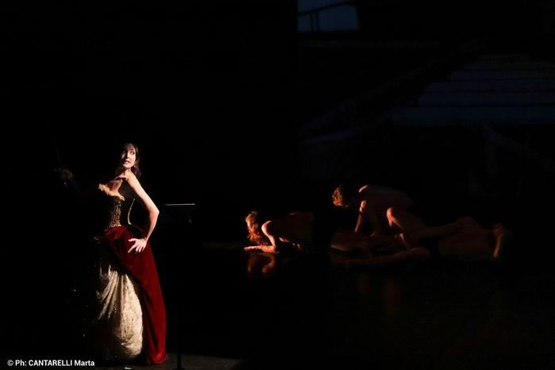
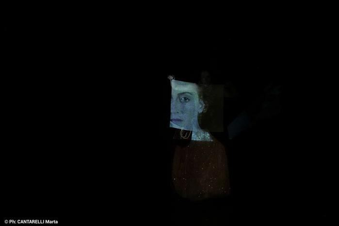
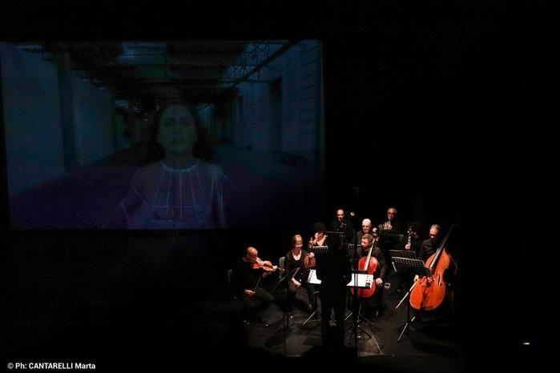
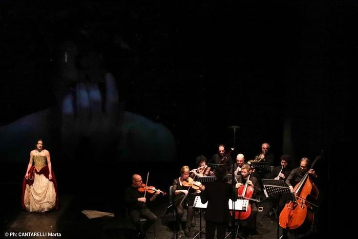

Angelica Cunta is a monodrama for mezzo-soprano and ensemble composed by Virginia Guastella on her own texts freely inspired by Ludovico Ariosto’s Orlando furioso and the anonymous Storia dei paladini di Francia. Directed and designed by Cristian Taraborrelli. Commissioned by the 58th Festival di Nuova Consonanza and world-premiered at Mattatoio - La Pelanda in Rome on December 17, 2021.
A tribute to Sicilian Puppet Theatre (UNESCO Heritage): Angelica narrates her own story through the declamatory techniques of the cunto. The protagonist imitates male voices, sings as a lyric mezzo-soprano and directly addresses the audience, losing Medoro through identification with Gluck’s Orpheus. The production blends opera singing, dance, mime, clowning and acrobatics with virtual sets and hyper-realistic costumes, creating a dialogue between ancient tradition and contemporary art.
Angelica Cunta è un monodramma per mezzosoprano e ensemble composto da Virginia Guastella su testi propri liberamente ispirati all’Orlando furioso di Ludovico Ariosto e alla Storia dei paladini di Francia (testo anonimo). Regia e scene di Cristian Taraborrelli. Commissionato dal 58° Festival di Nuova Consonanza e presentato in prima assoluta al Mattatoio - La Pelanda di Roma il 17 dicembre 2021.
Un omaggio al Teatro dei Pupi siciliano (Patrimonio UNESCO): Angelica è narratrice della propria storia attraverso le tecniche declamatorie del cunto. La protagonista imita voci maschili, canta come mezzosoprano lirico e si rivolge direttamente al pubblico, perdendo Medoro attraverso l’immedesimazione nell’Orfeo di Gluck. La produzione unisce canto lirico, danza, mimo, clownerie e acrobazia con set virtuali e costumi iper-realistici, in un dialogo tra antico e contemporaneo.
Angelica Cunta est un monodrame pour mezzo-soprano et ensemble composé par Virginia Guastella sur ses propres textes librement inspirés de l’Orlando furioso de Ludovico Ariosto et de la Storia dei paladini di Francia (texte anonyme). Mis en scène et décoré par Cristian Taraborrelli. Commandé par le 58e Festival di Nuova Consonanza et créé en première mondiale au Mattatoio - La Pelanda à Rome le 17 décembre 2021.
Un hommage au Théâtre des Pupi sicilien (Patrimoine UNESCO) : Angelica est la narratrice de sa propre histoire à travers les techniques déclamatoires du cunto. La protagoniste imite les voix masculines, chante en mezzo-soprano lyrique et s’adresse directement au public, perdant Médor à travers l’identification avec l’Orphée de Gluck. La production mêle chant lyrique, danse, mime, clownerie et acrobatie avec des décors virtuels et des costumes hyper-réalistes, dans un dialogue entre tradition ancestrale et art contemporain.
Creative Team
Artists
Mezzo-soprano
Chiara Osella
Ensemble
Bruno Maderna Ensemble
Performers
Fabiola Morgana Giulia Barbieri
Bryan Da Ros
Paolo Ippolito
Virginia Matta
Valeria Pelino
Raffaele Palmieri
The Composer
Virginia Guastella was born in Palermo in 1979. Academically trained (Diplomas in Piano and Composition, Master’s degree cum laude in Musical Aesthetics), she works across diverse fields: avant-garde, jazz crossover, and soundtracks for TV, cinema and advertising. Her works have been performed by orchestras including the Berliner Philharmoniker, the Concertgebouw and the Radio France Philharmonique.
She is the founder and artistic director of UOF — Urban Opera Festival, a new music theatre festival organized in collaboration with DAR — Department of Arts at the University of Bologna, DumBO and Robot Festival.
Recent commissions include: L’ombra di un meriggio lontano (Fondazione Cantiere Internazionale d’Arte di Montepulciano, 2022), the duodrama Floria, sì, sono io with Stefania Sandrelli at the Puccini Festival in Torre del Lago by invitation of Giorgio Battistelli (2020), and original music for the Ravenna Festival in a duo with Massimo Gramellini. In 2021 she served as Composer in Residence at I Concerti della Normale in Pisa by invitation of Carlo Boccadoro.
Virginia Guastella nasce a Palermo nel 1979. Di formazione accademica (Diploma in Pianoforte, Composizione e Laurea cum laude in Estetica Musicale), lavora in diversi ambiti: avanguardia, crossover jazz, colonne sonore per la TV, il cinema e la pubblicità. Le sue opere sono state eseguite da orchestre come i Berliner Philharmoniker, il Concertgebouw e la Radio France Philharmonique.
È ideatrice e direttrice artistica di UOF — Urban Opera Festival, un nuovo festival di teatro musicale organizzato in collaborazione con il DAR — Dipartimento delle Arti dell’Università di Bologna, DumBO e Robot Festival.
Tra le commissioni recenti: L’ombra di un meriggio lontano (Fondazione Cantiere Internazionale d’Arte di Montepulciano, 2022), il duodrama Floria, sì, sono io con Stefania Sandrelli al Festival Puccini di Torre del Lago su invito di Giorgio Battistelli (2020), e musiche originali per il Ravenna Festival in duo con Massimo Gramellini. Nel 2021 è stata Compositrice in residenza a I Concerti della Normale di Pisa su invito di Carlo Boccadoro.
Virginia Guastella est née à Palerme en 1979. De formation académique (Diplômes de Piano et de Composition, Maîtrise cum laude en Esthétique Musicale), elle travaille dans divers domaines : avant-garde, crossover jazz, musiques pour la télévision, le cinéma et la publicité. Ses œuvres ont été interprétées par des orchestres tels que les Berliner Philharmoniker, le Concertgebouw et la Radio France Philharmonique.
Elle est la fondatrice et directrice artistique de l’UOF — Urban Opera Festival, un nouveau festival de théâtre musical organisé en collaboration avec le DAR — Département des Arts de l’Université de Bologne, DumBO et Robot Festival.
Parmi ses commandes récentes : L’ombra di un meriggio lontano (Fondazione Cantiere Internazionale d’Arte de Montepulciano, 2022), le duodrame Floria, sì, sono io avec Stefania Sandrelli au Festival Puccini de Torre del Lago sur invitation de Giorgio Battistelli (2020), et des musiques originales pour le Ravenna Festival en duo avec Massimo Gramellini. En 2021, elle a été Compositrice en résidence aux Concerti della Normale de Pise sur invitation de Carlo Boccadoro.
Gallery





Video
Tags